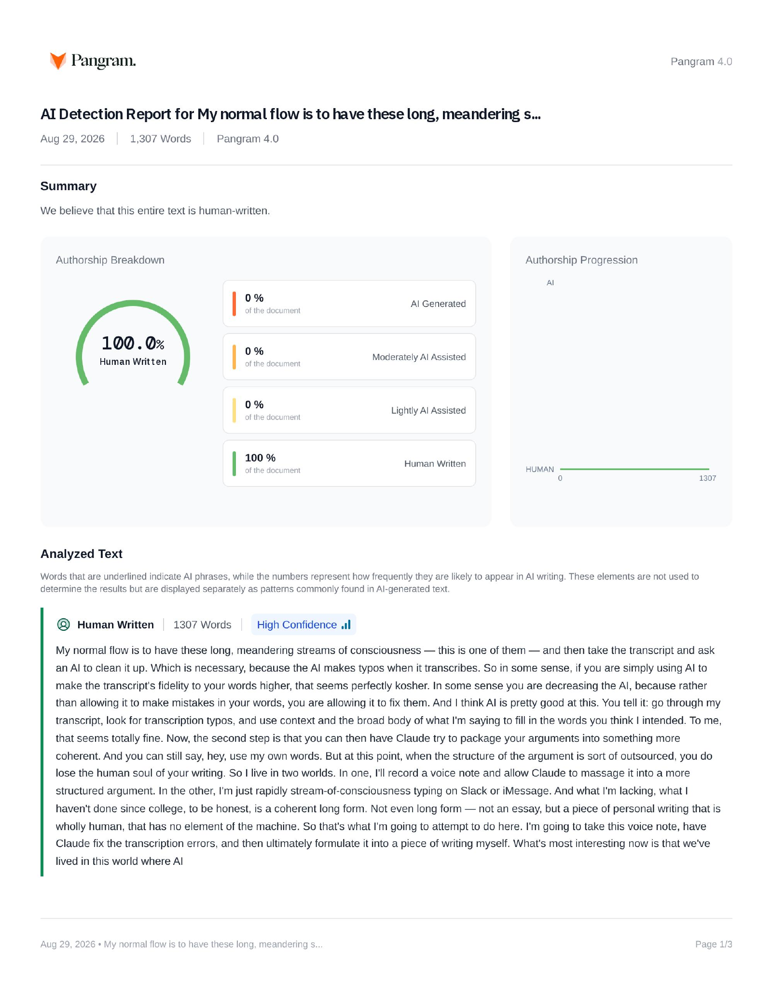

An experiment in layers
A Note About AI Writing
The same thought, passed through successive layers: the original voice note, the machine's rough transcript, a typo-only cleanup, a human essay, and a version written by Claude. The point is to make the change in form visible, not just argue that it happens.
Layer 02
Raw transcript
The machine transcript, including its mistakes.
Okay, so, this is a note about AI writing. Look, my normal flow is to have these long and meandering streams of consciousness, which, this is one of them, and then basically, you know, take the transcript and ask an AI to clean it up. Which is necessary, because the AI makes typos when it transcribes.
So, you know, in some sense, if you are simply using AI to make the transcript's fidelity your words higher, that seems perfectly kosher. In some sense, you are decreasing the AI, because rather than, you know, rather than allowing AI to make mistakes in your words, you are allowing the ad to fix them. And I think I asked pretty good this, because if you tell it, you know, basically, I want you to, you know, go through my transcript, look for typos, look for transcription typos, and use context, uh, and the broad body of what I'm saying, to, you know, fill in the words that you think I intended.
To me, that seems totally fine. Now, the second step is you can then have Claude try to, you know, package your arguments into something more coherent. And you can still say, hey, you know, use my own words.
But at this point, when the structure of the argument is sort of... outsourced, you do lose the hardened soul of your writing. And so it's interesting where, you know, I live in this world where I will do this quite a bit, where I'll record a voice note, allow Claude to sort of massage it into a more structured argument. And then I have a different world where I'm just rapidly on Slack or an iMessage.
I'll just rapidly stream a consciousness. type. And what I'm lacking, what I haven't done in college, to be honest, is, you know, how do I write a coherent, long form? Not even long form.
I have an essay, but a piece of personal writing, that is, you know, wholly human, that is no element of the machine. So that's what I'm gonna attempt to do here. I mean, I'm gonna take this voice note, I'm going to have Claude fix the transcription errors, and then I will, you know, ultimately formulate it into a piece of writing.
I think what's most interesting now is, look, we've lived in this world where AI detection was, frankly, a farce. You know, false files were way too high. Now we live in a world where you actually can do it.
And with pangram, it is remarkably difficult to fool it. And this is actually quite an interesting update, which is, no matter how smart you can, you can be using Fable 5, Seoul 5, 6. There seems to be something, you know, you can feel it.
This is kind of a meta point about why I'm doing this. You can feel what a clawed, written essay. is shaped like. There is some intuitive pattern recognition where, within a sentence or two, I can be like, Oh, this is not a human essay.
And... you know, this goes down to even just if you ask an AI to list, you know, numbers. Or random words. Uh, that list of words or numbers can be detected as AI by the systems.
So there are these, you know, there is fundamentally a patterning going on. And if you think about it, like for coding, the patterning is good. Because there is, you know, such a thing as a good coat.
Right? And style doesn't really matter the question... I mean, style does matter, I suppose, right?
You can have code that works, but it's overly defensive and bloated, which is kind of a critique of GP 5.6. But in writing, there isn't some single universal best way to write. There are tropes, but then the tropes sort of collapse into sort of... a caricature of itself, right?
It's like, if you use all the best writing tropes, which is maybe what, you know, Claude does, you have something that is, you know, better, maybe, than 80% of writers, in terms of, like, technical merit. But ultimately has some soullessness in it, and it would be far better. And this is going to go back to the Apollonian and the Van Iceland, which is, there's a sense of...
It's strange, right? You would think that a probabilistic machine would have sort of a raw, vibrant, fertile cast. And it does.
The base model is clearly happiness. You can see the, almost the frenzy of their style. And you can even see in some of these, like, the hug and face hacks, and you look at the internal racing chain.
There is something... sort of wild or inventive. And somehow, though, in these post train models, when it comes to writing, I mean, how ironic is it that a language model? If all the things it can do, the thing that it's actually worse set is writing.
It's strange. But again, it's not strange if you realize that it's all about verifiability, and the idea of, you know, is there a single best way to do this? Or that's where taste comes in, and the idea of taste in some sense is that taste is, you know, there are not a hundred best ways to, you know, solve a coding problem.
There are objective measures as to, which is the vaccine, in some sense, it's, you know, the thing that does what you want, most reliably, with a speed lines of coat as possible. Is... This maybe a simple way to...
But for writing, really, what you want in some deep sense, there's almost a sort of parasocial relationship with the author's minds. And the real betrayal of writing someone that was written by AI is you have this Donny sense that you thought you were going to commune with the mind of the writer, the voice of the writer, the consciousness of the writer, right? In the most sort of visceral way, you can access consciousness, which is words, and the choice of words.
And when you feel the pattern of Claude Slop, you feel betrayed. Because the thing you really wanted was not the contents. I don't think it's cheap.
You wanted the form. You wanted the soul of the writer. And instead, you got... essentially... the selected, right?
It's still valuable in a sense, right? It's still, you know, the writer's curating content for you, but you no longer have access to their, you know, the raw... I mean, look, you never access their raw consciousness, but, no.
Look, and that goes to the steeper point, which is we all live in these, you know, hermetically sealed bubbles, right? We can never see outside of our own first person hook. Yeah, there's a whole, there's become a zombie problem.
Do we even know that there's, you know, any light behind the eyes inside the minds of anyone else, or are they all just zombies? And, you know, obviously, conversation and writing, the trading of words, is one way in which you can transcend the boundaries itself. So I think that's the, almost the spiritual value of writing and reading, and when you pass everything through the layer of clod, you divorce form and content, and what you realize is that no one really cared about confidence.
They cared about the form. And, look, this is maybe different for fiction and nonfiction. You could argue that for, you know, fiction, it's even more, um... nonfiction, it is more information retrieval in some sense.
You know, some, like, if you're reading a self help book or a, you know, a technical book on some matter, it really is, is the information correct, and is it written in a, you know, legible manner? But the best nonfiction is more than that, right? The best song fiction is story, it's character.
It's weaving the, you know, the true facts on the ground, the structure of a narrative, in a way that makes it maximumally compelling while also teaching you. And that requires the voice of the writer. If you want to just read an encyclopedia page, then AI is perfectly good.
So, yeah, I guess, I mean, I think that wraps up the thought, but I guess the exercise now is to, yeah, have, I guess, I'll have quickness, but, um, and, you know, and I'm on my own. Isn't this something interesting? Um, can this...
Yeah, can this leverage the... the raw thought itself? I can imagine an interesting thing, which is almost like a blog. Starts the voice note.
You include the audio, you include the transcript, then you include the quad cleaned up transcript. The very top, you would include your article, and maybe you also include a cloud article. So you can sort of compare the difference.
That might be an interesting perform. I like that idea.
Layer 03
Cleaned transcript
Transcription errors fixed against context. The wording, structure, repetition, and fragments are otherwise untouched.
Okay, so, this is a note about AI writing. Look, my normal flow is to have these long and meandering streams of consciousness, which, this is one of them, and then basically, you know, take the transcript and ask an AI to clean it up. Which is necessary, because the AI makes typos when it transcribes.
So, you know, in some sense, if you are simply using AI to make the transcript's fidelity to your words higher, that seems perfectly kosher. In some sense, you are decreasing the AI, because rather than, you know, rather than allowing AI to make mistakes in your words, you are allowing the AI to fix them. And I think AI is pretty good at this, because if you tell it, you know, basically, I want you to, you know, go through my transcript, look for typos, look for transcription typos, and use context, uh, and the broad body of what I'm saying, to, you know, fill in the words that you think I intended.
To me, that seems totally fine. Now, the second step is you can then have Claude try to, you know, package your arguments into something more coherent. And you can still say, hey, you know, use my own words.
But at this point, when the structure of the argument is sort of... outsourced, you do lose the human soul of your writing. And so it's interesting where, you know, I live in this world where I will do this quite a bit, where I'll record a voice note, allow Claude to sort of massage it into a more structured argument. And then I have a different world where I'm just rapidly on Slack or an iMessage.
I'll just rapidly stream-of-consciousness type. And what I'm lacking, what I haven't done in college, to be honest, is, you know, how do I write a coherent, long form? Not even long form.
I have an essay, but a piece of personal writing, that is, you know, wholly human, that has no element of the machine. So that's what I'm gonna attempt to do here. I mean, I'm gonna take this voice note, I'm going to have Claude fix the transcription errors, and then I will, you know, ultimately formulate it into a piece of writing.
I think what's most interesting now is, look, we've lived in this world where AI detection was, frankly, a farce. You know, false positives were way too high. Now we live in a world where you actually can do it.
And with Pangram, it is remarkably difficult to fool it. And this is actually quite an interesting update, which is, no matter how smart you can, you can be using GPT-5, Claude 5.6. There seems to be something, you know, you can feel it.
This is kind of a meta point about why I'm doing this. You can feel what a Claude-written essay is shaped like. There is some intuitive pattern recognition where, within a sentence or two, I can be like, Oh, this is not a human essay.
And... you know, this goes down to even just if you ask an AI to list, you know, numbers. Or random words. Uh, that list of words or numbers can be detected as AI by the systems.
So there are these, you know, there is fundamentally a patterning going on. And if you think about it, like for coding, the patterning is good. Because there is, you know, such a thing as good code.
Right? And style doesn't really matter the question... I mean, style does matter, I suppose, right?
You can have code that works, but it's overly defensive and bloated, which is kind of a critique of GPT-5.6. But in writing, there isn't some single universal best way to write. There are tropes, but then the tropes sort of collapse into sort of... a caricature of itself, right?
It's like, if you use all the best writing tropes, which is maybe what, you know, Claude does, you have something that is, you know, better, maybe, than 80% of writers, in terms of, like, technical merit. But ultimately has some soullessness in it, and it would be far better. And this is going to go back to the Apollonian and the Dionysian, which is, there's a sense of...
It's strange, right? You would think that a probabilistic machine would have sort of a raw, vibrant, fertile chaos. And it does.
The base model clearly has this. You can see the, almost the frenzy of their style. And you can even see in some of these, like, the Hugging Face hacks, and you look at the internal reasoning chain.
There is something... sort of wild or inventive. And somehow, though, in these post-trained models, when it comes to writing, I mean, how ironic is it that a language model? Of all the things it can do, the thing that it's actually worst at is writing.
It's strange. But again, it's not strange if you realize that it's all about verifiability, and the idea of, you know, is there a single best way to do this? Or that's where taste comes in, and the idea of taste in some sense is that taste is, you know, there are not a hundred best ways to, you know, solve a coding problem.
There are objective measures as to which is the best code, in some sense, it's, you know, the thing that does what you want, most reliably, with as few lines of code as possible. Is... This maybe a simple way to...
But for writing, really, what you want in some deep sense, there's almost a sort of parasocial relationship with the author's mind. And the real betrayal of reading something that was written by AI is you have this uncanny sense that you thought you were going to commune with the mind of the writer, the voice of the writer, the consciousness of the writer, right? In the most sort of visceral way, you can access consciousness, which is words, and the choice of words.
And when you feel the pattern of Claude slop, you feel betrayed. Because the thing you really wanted was not the content. I don't think it's chiefly. You wanted the form. You wanted the soul of the writer. And instead, you got... essentially... the selection, right?
It's still valuable in a sense, right? It's still, you know, the writer's curating content for you, but you no longer have access to their, you know, the raw... I mean, look, you never access their raw consciousness, but, no.
Look, and that goes to this deeper point, which is we all live in these, you know, hermetically sealed bubbles, right? We can never see outside of our own first-personhood. Yeah, there's a whole, there's the philosophical zombie problem.
Do we even know that there's, you know, any light behind the eyes inside the minds of anyone else, or are they all just zombies? And, you know, obviously, conversation and writing, the trading of words, is one way in which you can transcend the boundaries of self. So I think that's the, almost the spiritual value of writing and reading, and when you pass everything through the layer of Claude, you divorce form and content, and what you realize is that no one really cared about content.
They cared about the form. And, look, this is maybe different for fiction and nonfiction. You could argue that for, you know, fiction, it's even more, um... nonfiction, it is more information retrieval in some sense.
You know, some, like, if you're reading a self-help book or a, you know, a technical book on some matter, it really is, is the information correct, and is it written in a, you know, legible manner? But the best nonfiction is more than that, right? The best nonfiction is story, it's character.
It's weaving the, you know, the true facts on the ground, the structure of a narrative, in a way that makes it maximumally compelling while also teaching you. And that requires the voice of the writer. If you want to just read an encyclopedia page, then AI is perfectly good.
So, yeah, I guess, I mean, I think that wraps up the thought, but I guess the exercise now is to, yeah, have, I guess, I'll have Claude fix this, but, um, and, you know, and then on my own. Isn't this something interesting? Um, can this...
Yeah, can this leverage the... the raw thought itself? I can imagine an interesting thing, which is almost like a blog. Starts the voice note.
You include the audio, you include the transcript, then you include the Claude-cleaned-up transcript. At the very top, you would include your article, and maybe you also include a Claude article. So you can sort of compare the difference.
That might be an interesting format. I like that idea.
Layer 04
A Note on AI Writing
Claude-cleaned version. Pangram scores this version as 100% human-written.

Open the full Pangram report (PDF)My normal flow is to have these long, meandering streams of consciousness — this is one of them — and then take the transcript and ask an AI to clean it up. Which is necessary, because the AI makes typos when it transcribes.
So in some sense, if you are simply using AI to make the transcript's fidelity to your words higher, that seems perfectly kosher. In some sense you are decreasing the AI, because rather than allowing it to make mistakes in your words, you are allowing it to fix them. And I think AI is pretty good at this. You tell it: go through my transcript, look for transcription typos, and use context and the broad body of what I'm saying to fill in the words you think I intended. To me, that seems totally fine.
Now, the second step is that you can then have Claude try to package your arguments into something more coherent. And you can still say, hey, use my own words. But at this point, when the structure of the argument is sort of outsourced, you do lose the human soul of your writing.
So I live in two worlds. In one, I'll record a voice note and allow Claude to massage it into a more structured argument. In the other, I'm just rapidly stream-of-consciousness typing on Slack or iMessage. And what I'm lacking, what I haven't done since college, to be honest, is a coherent long form. Not even long form — not an essay, but a piece of personal writing that is wholly human, that has no element of the machine. So that's what I'm going to attempt to do here. I'm going to take this voice note, have Claude fix the transcription errors, and then ultimately formulate it into a piece of writing myself.
What's most interesting now is that we've lived in this world where AI detection was, frankly, a farce — false positives were way too high — and now we live in a world where you actually can do it. With Pangram, it is remarkably difficult to fool. And this is actually quite an interesting update: no matter how smart the model is, GPT-5, Claude 5.6, there seems to be something. You can feel it.
This is kind of a meta point about why I'm doing this. You can feel what a Claude-written essay is shaped like. There is some intuitive pattern recognition where within a sentence or two I can be like, oh, this is not a human essay. And this goes down to even just if you ask an AI to list numbers, or random words. That list of words or numbers can be detected as AI by the systems. So there is fundamentally a patterning going on.
And if you think about it, for coding the patterning is good, because there is such a thing as good code. Style doesn't really matter — I mean, style does matter, I suppose. You can have code that works, but it's overly defensive and bloated, which is kind of a critique of GPT-5.6. But in writing, there isn't some single universal best way to write. There are tropes, but then the tropes sort of collapse into a caricature of themselves. If you use all the best writing tropes, which is maybe what Claude does, you have something that is better, maybe, than 80% of writers in terms of technical merit, but ultimately has some soullessness in it.
And this goes back to the Apollonian and the Dionysian. It's strange, right? You would think that a probabilistic machine would have a sort of raw, vibrant, fertile chaos. And it does. The base model clearly has this — you can see almost the frenzy of their style. You can even see it in some of these Hugging Face hacks, where you look at the internal reasoning chain and there is something sort of wild, or inventive. And somehow, in these post-trained models, when it comes to writing — how ironic is it that of all the things a language model can do, the thing it's actually worst at is writing?
It's strange. But again, it's not strange if you realize that it's all about verifiability, and the idea of, is there a single best way to do this? That's where taste comes in. Taste, in some sense, is that there are not a hundred best ways to solve a coding problem. There are objective measures as to which is the best code — the thing that does what you want, most reliably, with as few lines of code as possible. That's maybe a simple way to put it.
But for writing, what you want in some deep sense is almost a parasocial relationship with the author's mind. And the real betrayal of reading something that was written by AI is that you have this uncanny sense that you thought you were going to commune with the mind of the writer, the voice of the writer, the consciousness of the writer, in the most visceral way you can access consciousness, which is words, and the choice of words. And when you feel the pattern of Claude slop, you feel betrayed. Because the thing you really wanted was not the content — I don't think it's chiefly the content. You wanted the form. You wanted the soul of the writer. And instead you got, essentially, the selection.
It's still valuable in a sense. The writer is still curating content for you. But you no longer have access to the raw — I mean, look, you never access anyone's raw consciousness.
And that goes to this deeper point, which is that we all live in these hermetically sealed bubbles. We can never see outside of our own first-personhood. There's the philosophical zombie problem: do we even know that there's any light behind the eyes inside the minds of anyone else, or are they all just zombies? And obviously conversation and writing, the trading of words, is one way in which you can transcend the boundaries of self. So I think that's almost the spiritual value of writing and reading. And when you pass everything through the layer of Claude, you divorce form and content, and what you realize is that no one really cared about content. They cared about the form.
And look, this is maybe different for fiction and nonfiction. Nonfiction is more information retrieval in some sense. If you're reading a self-help book, or a technical book on some matter, it really is: is the information correct, and is it written in a legible manner? But the best nonfiction is more than that. The best nonfiction is story, it's character. It's weaving the true facts on the ground into the structure of a narrative in a way that makes it maximally compelling while also teaching you. And that requires the voice of the writer. If you want to just read an encyclopedia page, then AI is perfectly good.
So, yeah, I think that wraps up the thought. The exercise now is to have Claude fix this, and then do it on my own. But isn't this something interesting? Can this leverage the raw thought itself? I can imagine an interesting thing, which is almost like a blog. It starts with the voice note. You include the audio, you include the transcript, then you include the Claude-cleaned-up transcript. At the very top you would include your article, and maybe you also include a Claude article, so you can sort of compare the difference. That might be an interesting format. I like that idea.
Layer 05
The essay (human)
To be written.
Layer 06
The essay (Claude)
To be written.